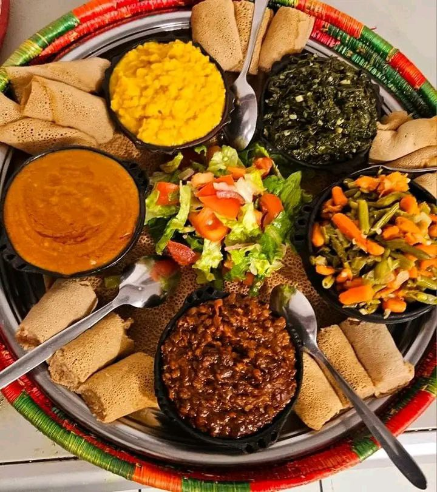
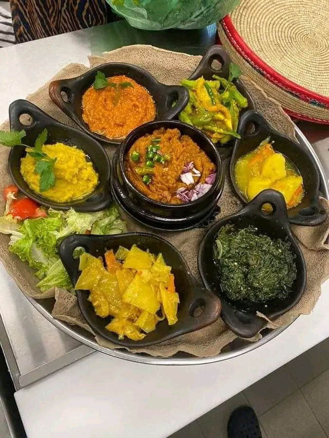
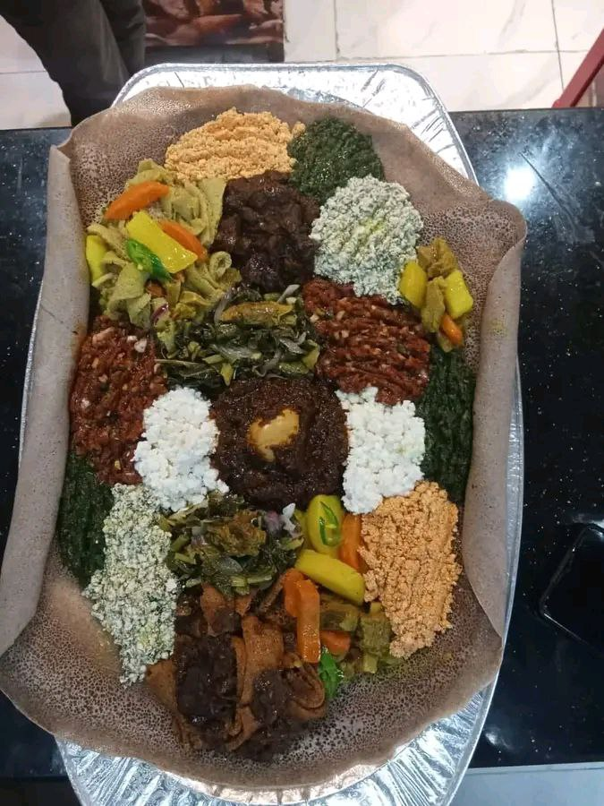
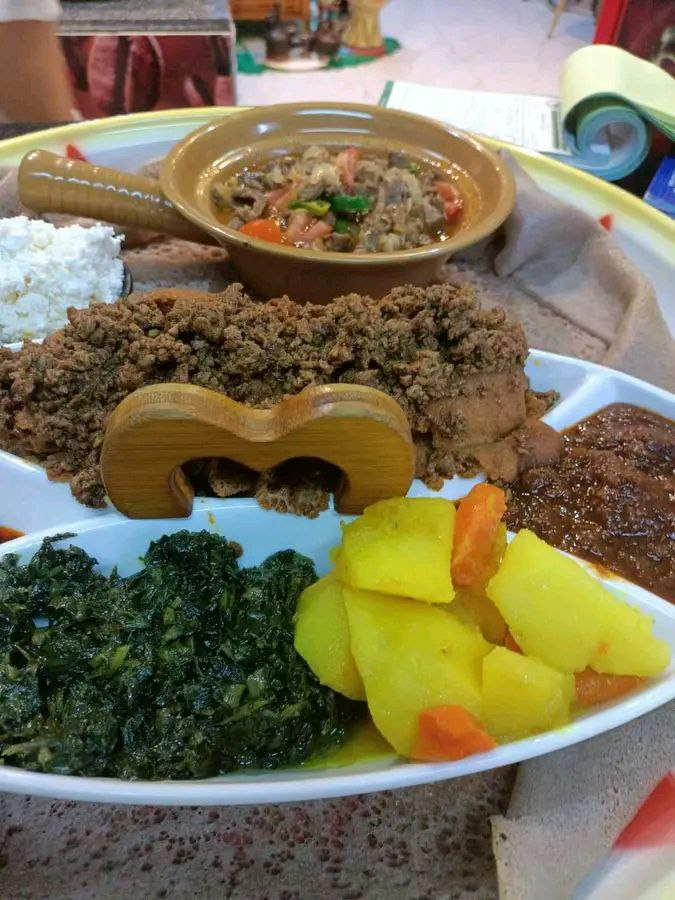
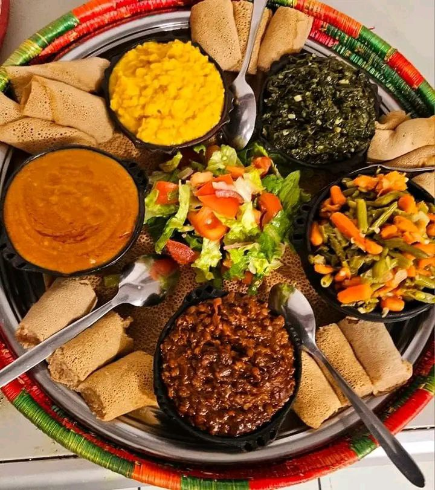
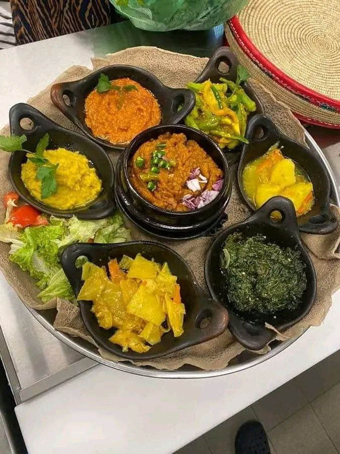
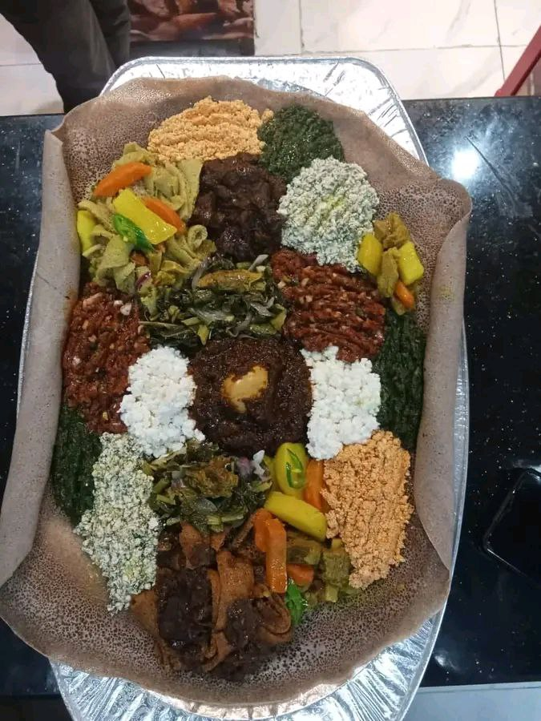
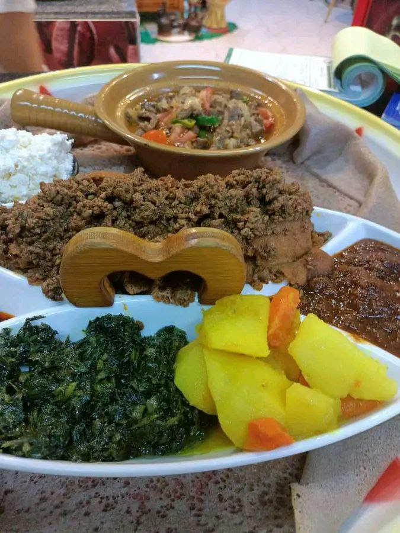


MY PERSONAL WEBSITE
I am called tizita my father name is Faris and my mother name is Genet.I was born in 19,9,1999 in Assela town.I live in Dodola town since 2015,now I am a grade 10 student at Dodola Special Boarding school.I wanna be a Neuclear chemist and phisist because I need to contrbiute my own portion for development of this field in my country Ethiopia and Africa. In my lesure time I like to do so many things that help me to acheive my goal.such as
by clicking here,enjoy and increas your knowledge about solar system
Currently learning about AI concepts through the ALX Aice-AI Career Essentials Program
Born under the Gemini zodiac, I am a problem solver, an effective communicator, and a potential great leader of Africa.
In my behavir I ador searching and question about all things. specaliy information that have related with my hobby and future. I am drawn to nature and traviling. If a willing of God, I need to travel all over the world and visit histirical and scientific places,like
Most of the time I prefer to have healthy and fresh foods. I admire our traditional foods specialy
pordge and cecebsa,however my favorate food is pizza and Dorowet.I bleave in pharase that say
'A person who eat well,feel well'.let me invite you some Ethiopian traditonalfoods
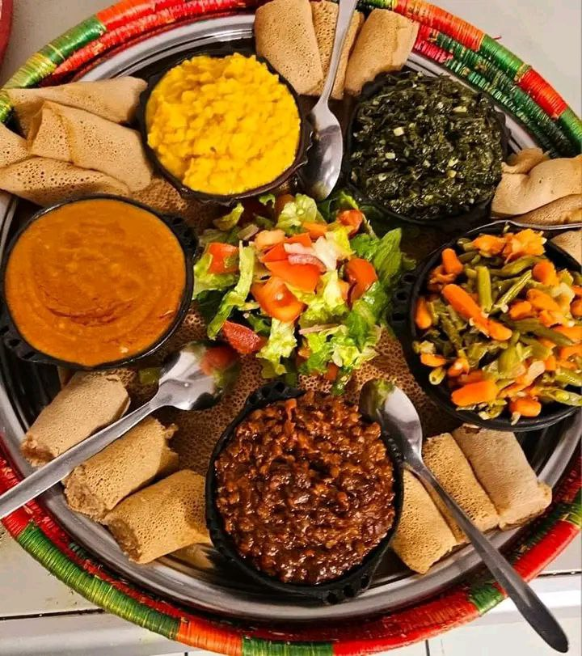
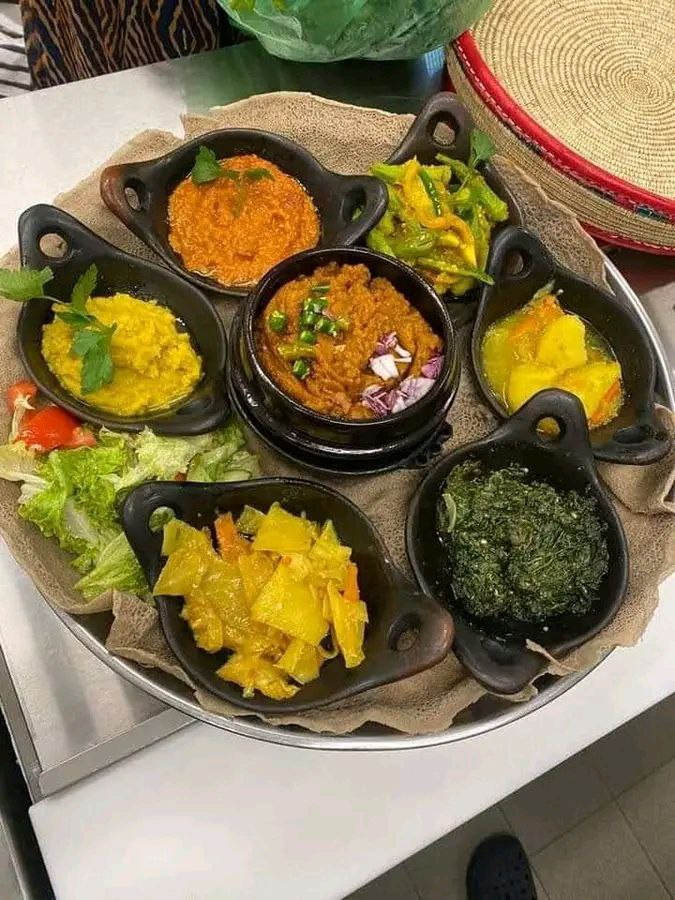
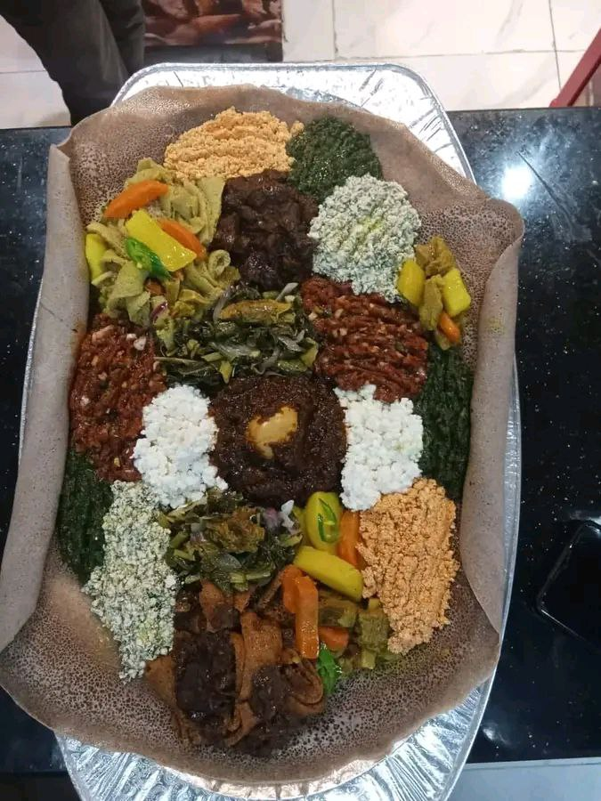
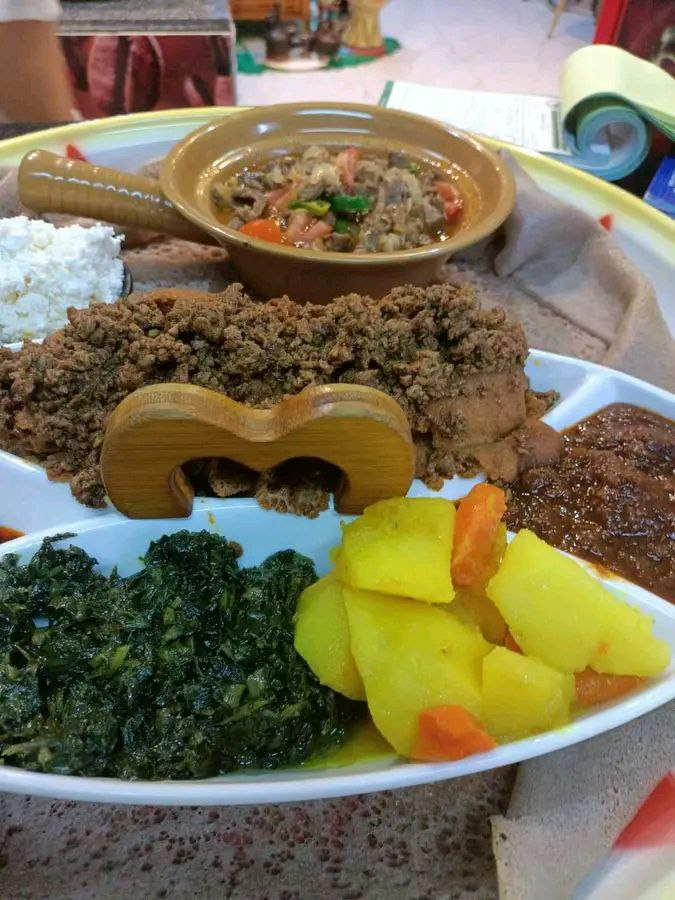
More than anything else I always focus on myself and on my career.Most important people that change
this world, they was first focus on themselves then they made miracle and eternal work for the world.
I said every morning for myself this pharases

I love to take a photo in every situation. I think I can express my feelings
by my photos specialy when I am sad and upset.For this reason I was learn a Adobe
photoshop to synchronize my photos.
click here to visit my personal photos
I have joined Dodola specaial boarding school since 2015. MY school has an attractive
veiw starting from it's gate door to Anphitheatre.In my school there is so many students that came from
diffrent town and city of region Oromia. My school is the diversity of cultur,language and ethinics.
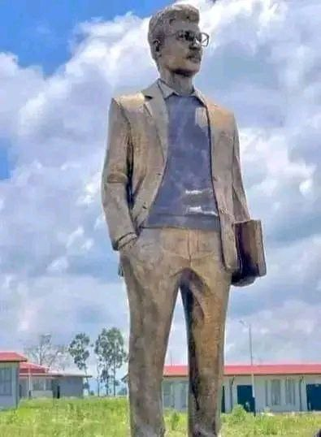


 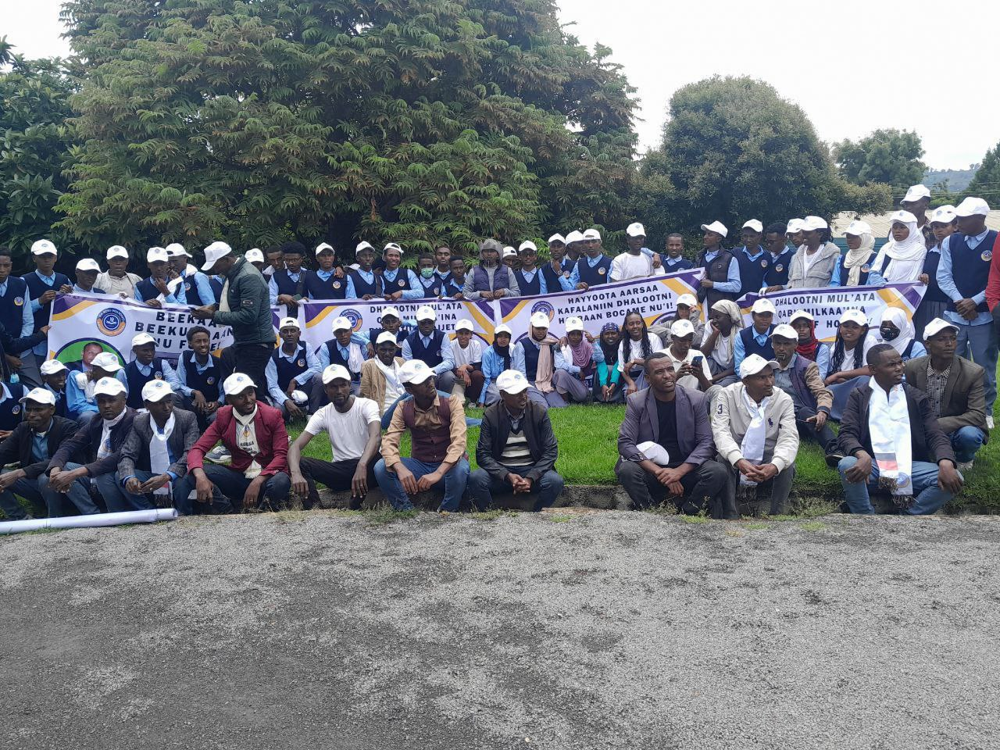
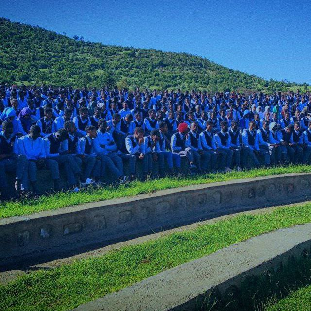
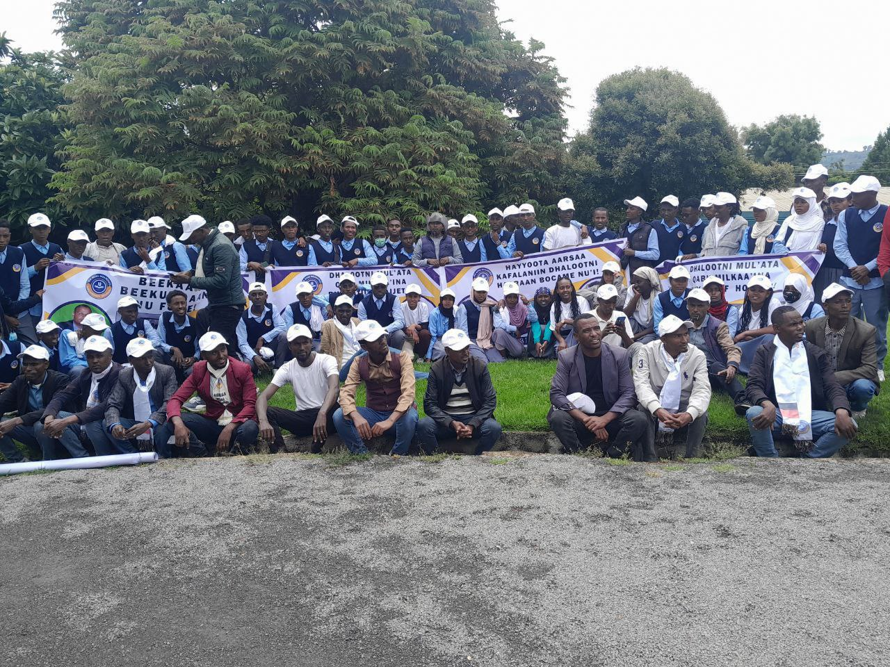
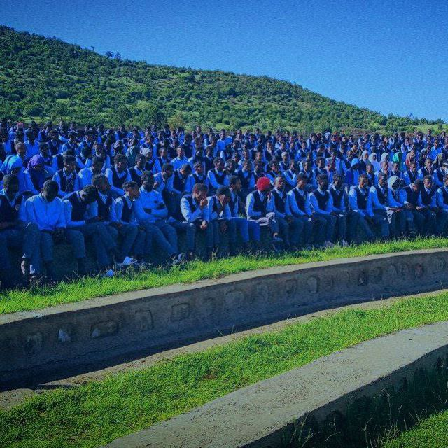
you can also visit more about my scchool by click here
In my acadamic year I am alwayes recored a good result.I always study by schedual, when new year started I have a plan and set a goal. Then I do allthing that i can do to achieve my goal. I study day and night by refering different books from laibrary, I ask question for topics that I am not understand, I use my time properly and so on. for this reason I also plan for 2016 acadamic year. you can see the followin table that taks about my plan